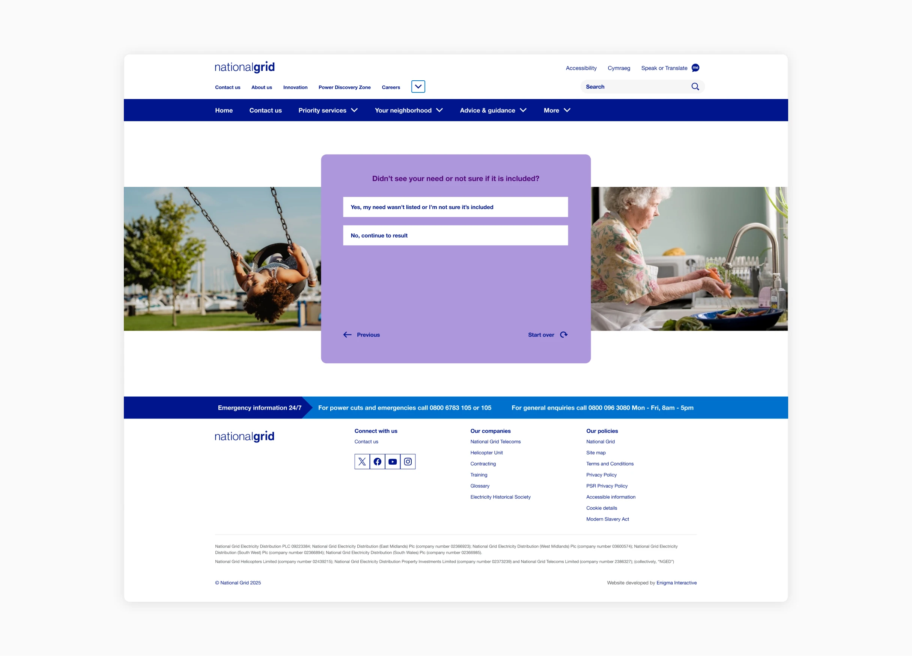
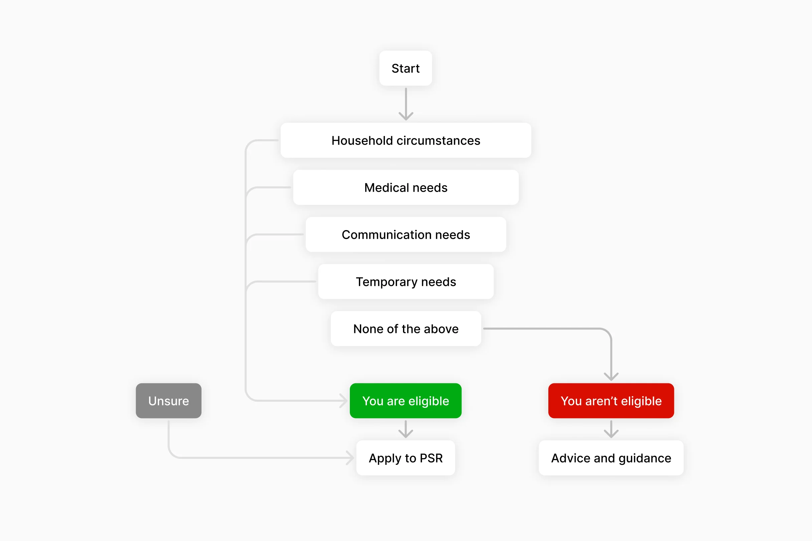
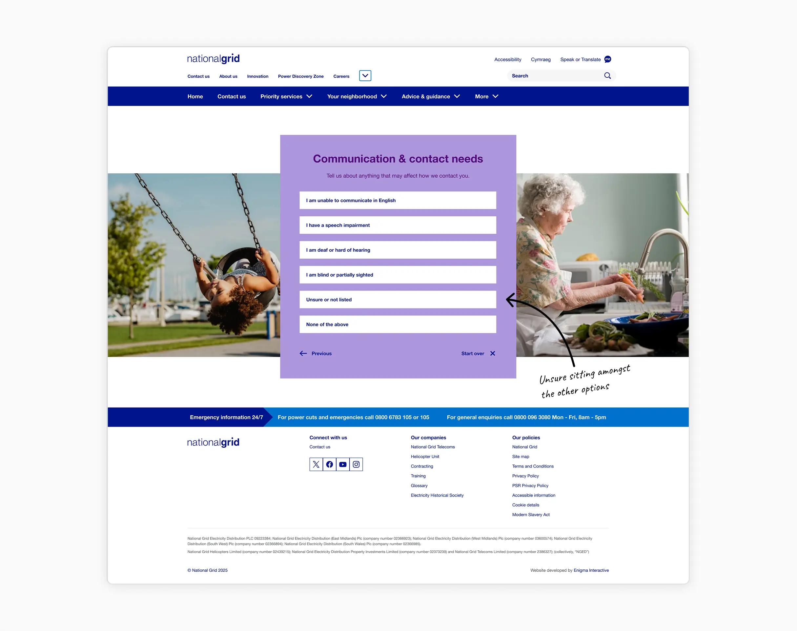
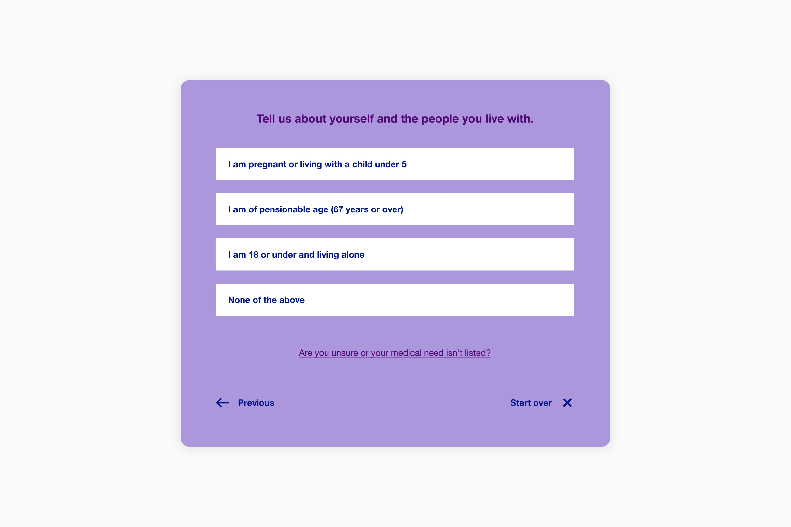
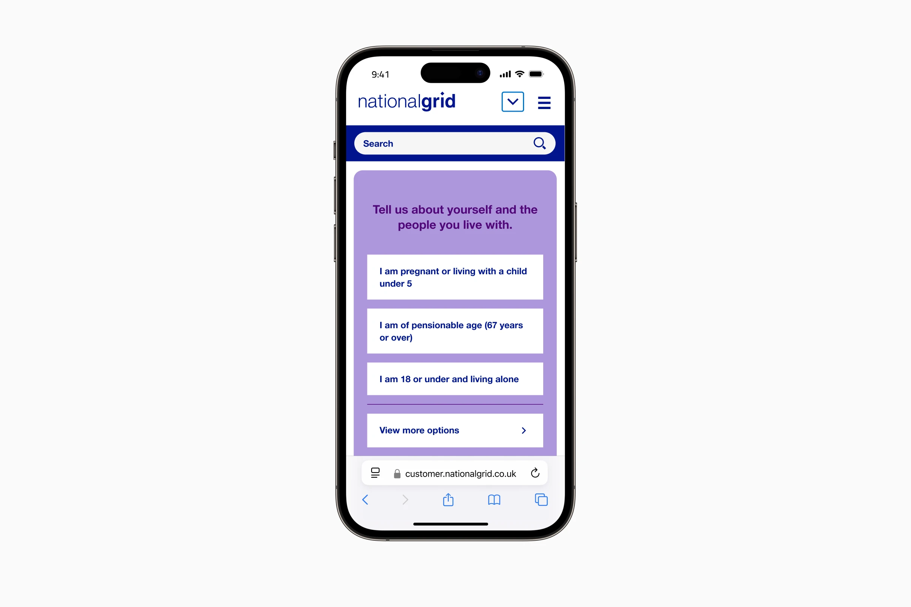
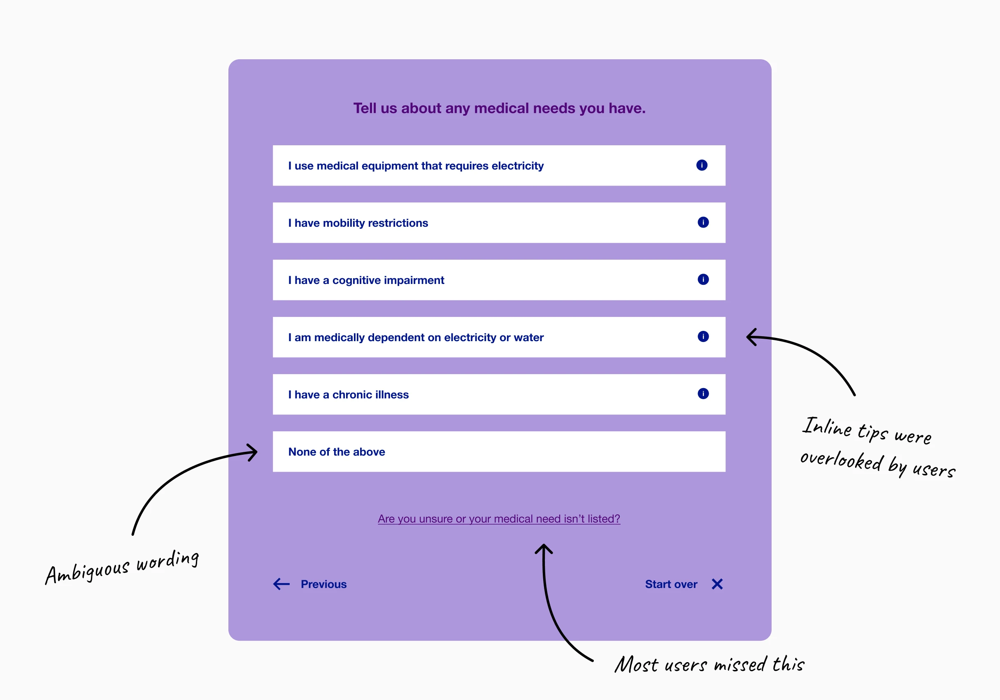
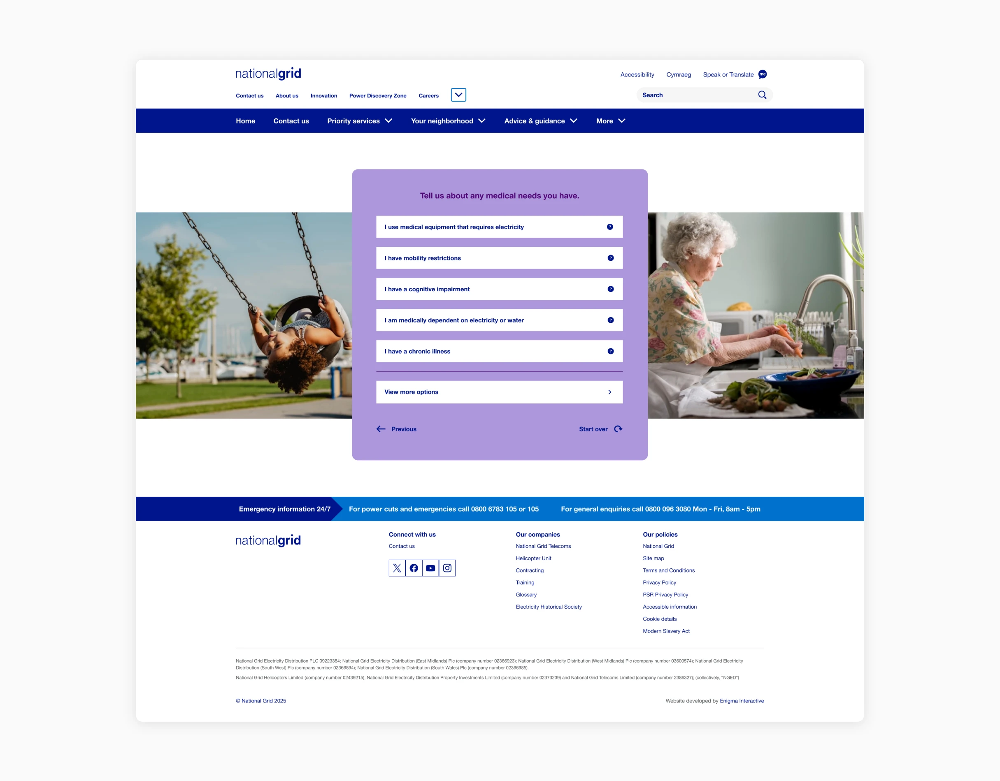

Don’t have time to read it all?
I led the design of an eligibility checker for National Grid’s Priority Services Register, helping vulnerable customers quickly find out if they qualify for extra support. The tool restructured a complex form into a fast, reassuring experience that reduced the decision tree by 50% and enabled most users to get an answer in two clicks.
Context and problem
There are around 16 million people in the UK living with a disability. The PSR (Priority Services Register) exists to make sure the most vulnerable energy customers get extra support from their electric or water company when they need it most.
Nearly 72,000 PSR applications were submitted online to National Grid in a single year, but we didn't know how many more eligible customers weren't applying.
National Grid's current PSR form wasn’t helping. It was vague about who actually qualified, and that vagueness was contributing to eligible customers choosing not to apply.

Changing health landscape
The older population in England is getting larger. In the last 40 years, the number of people aged 65 and over has increased by over 3.5 million (a 52% increase).
In the 10 years since 2013/14, the estimated number of disabled people has increased by 4.9 million (+41%).
These statistics show with an ever ageing population, and disability prevalence rising, it's important to provide the correct support to those who need it.
The approach
Ofgem had been pushing energy companies to find more innovative ways to increase PSR sign-ups. Rather than redesigning the full application form, we proposed something lighter. An eligibility checker that answers one question fast: do I qualify for PSR?
Structuring the flow
National Grid's existing form split PSR criteria into two categories: electrical medical equipment and all other health needs. That wasn't the right shape for a tool designed to reassure people quickly.
Rather than presenting every option at once, I reorganised the flow into a metaphorical funnel. The tool leads with broad and generalist questions first (age, life circumstances), because these cast the widest net and would provide most people with the fastest answer. Medical needs came next, then communication needs and lastly temporary needs. The idea was simple, lead with options most likely to apply and work inward from there.

A customer may well have 5 options apply to them but this tool was designed to supply them with an answer fastest by selecting the first option that applies. The more detailed form can capture those other health needs later in the process.
Unsure if you qualify?
A huge aspect of this tool was to try and encourage customers who are unsure if they are eligible, to apply anyway. For those caught in between a definite yes and no, we wanted to reassure them and advise them to apply.
Early iterations of the tool included an "unsure" option alongside the other choices in each category. A customer who is unsure if their medical need is covered in one category might be a definite yes in another.

However, "unsure" sitting amongst the health conditions felt like it didn’t truly fit. It was essentially a help option dressed up as a choice, and I didn’t want somebody to feel they have to be unsure about one specific category.
I chose to move "unsure" out of the options entirely and, instead, made it a permanent help link anchored at the bottom. This way it was always visible, and never in the way of the other PSR options.

This decision also simplified the back-end logic. Reducing the decision tree by 50%. That was because selecting unsure created a split in the decision tree where the system had to understand if the user moving on has flagged unsure at any point which would eventually lead them to a ‘you may be eligible’ screen.

Softening the visuals
The users coming to this tool may be managing chronic illness, caring for a vulnerable relative, or dealing with a difficult diagnosis. The design had to feel approachable without feeling patronising.

National Grid's palette is predominantly blue and white which often portrays a functional and corporate feeling. I reached into their extended palette and used lilac and purple instead. A custom set of icons were also created, helping contribute to the approachable feeling.
I worked within National Grid's existing component library, updating and refreshing where needed. It kept the build extremely lean whilst also providing us with exactly what we needed it to do.
Tone of voice
I worked closely with our content designer to manage expectations clearly. National Grid flagged early that customers often assumed PSR offered more than it does, and with high anticipated usage, that expectation needed addressing in the content.
The tool reflected the PSR form of being able to submit a claim for yourself or on behalf of somebody else. The language reflected that to ensure there was no confusion about the journey taken by customers.

Project outcomes
Most users can find out if they are eligible for PSR within two clicks. Given that the old experience required completing an entire form before finding out if you even qualified. This felt like a meaningful shift towards Ofgems goal of getting more customers, who are eligible, onto the register.
We defined a successful conversion not just as a 'you are eligible' result, but as the user then navigating through to the PSR application form. We wanted to see if reducing the up front complexiy increased the completion rate of the PSR form.